Module 2 · Word Processing Fundamentals
Text Formatting and Editing Tools
Turn plain text into a clean, official-looking letter, and fix mistakes in seconds instead of minutes.
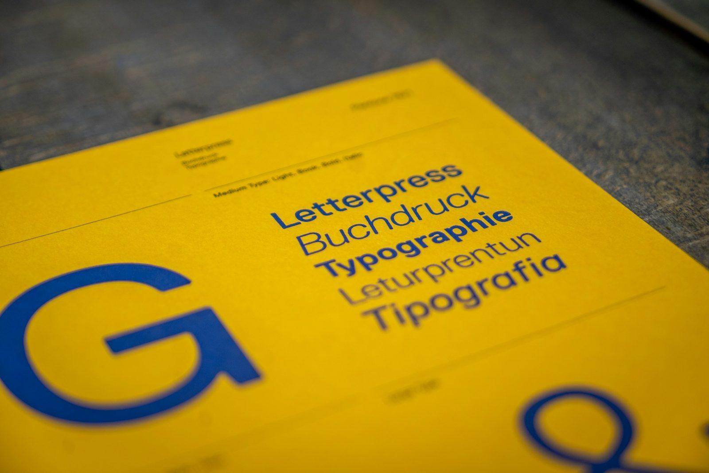
Welcome back. In 2.1 we pasted our plain letter in and saved it properly. Please open that file now: Letter - Digital Skills Workshop Invitation - 2026-11-03.
In this topic we make it look like a real formal letter: fonts, alignment, spacing, lists and styles. We'll also learn the editing tools that save the most time: copy and paste the smart way, Find and Replace, undo, and spell check.
By the end, you'll have the "after" version of a before-and-after.
Warm-up · type in the chat
Which formatting problem has
wasted your time the most?
A
Bullets and numbers that won't behave
B
Pasted text arrives in a strange font and size
C
Spacing is different in every paragraph
D
Changing the same word 40 times by hand
Ask for A, B, C or D in the chat and read out the most common answer. Many will say B: copying from an email or website and getting a different font.
Promise the fixes: A is the list tools and Tab key, B is Keep Text Only (Paste Options) or Clear Formatting, C is paragraph spacing, D is Find and Replace.
Tell them: "Kung mahuman ta karon, dili na ta mag-retype." Once you know these, no more retyping.
By the end of this topic
You'll be able to…
- Select text quickly with the mouse or keyboard.
- Format characters and paragraphs: font, size, bold, colour, alignment, spacing, lists, styles.
- Edit safely: copy and paste cleanly, undo, find and replace.
- Proofread with spelling and grammar check and word count.
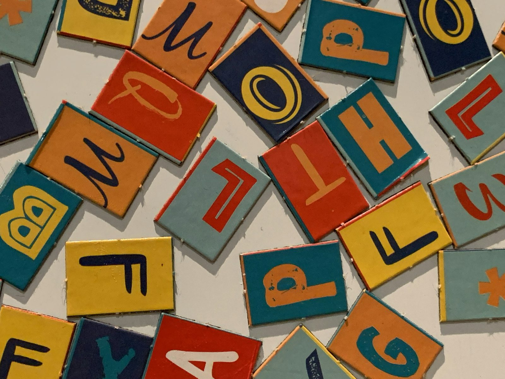
Four verbs: select, format, edit, proofread. That's the whole topic.
Mention the lab: the graded Module 2 output needs justified text, standard font sizes and evidence of human editing. Everything today feeds directly into that grade.
Ask: "Who already uses Ctrl+B for bold?" Show of hands or reactions. This tells you how fast you can go.
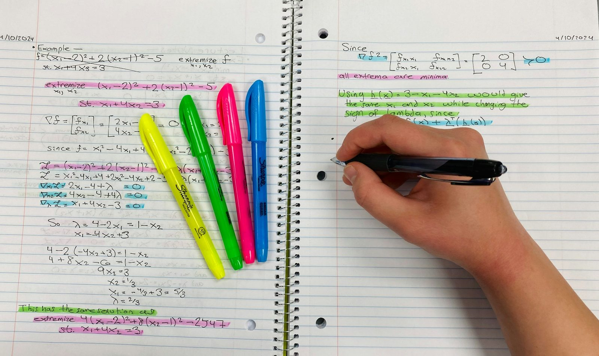
The golden rule
First select, then tell it what to do.
Like a highlighter: you mark the lines first, then you decide what to do with them.
- Selected text turns light blue .
- Every command (Bold, Font, Justify, Delete) acts only on the selection.
- Nothing selected? Most commands act on the word or paragraph where the cursor sits.
This is the most important habit in all of word processing. Beginners click Bold and start typing, then wonder why only new text is bold.
Demo: click Bold with nothing selected, type a word. Then select an existing word and click Bold. Show the difference.
The highlighter analogy: when your boss hands you a printout with highlighted lines, you know exactly which lines to fix. Selection is how you highlight for the computer.
Selecting text
Mouse or keyboard, pick your favourite
| To select… | With the mouse | With the keyboard |
|---|---|---|
| A word | Double-click it | Ctrl+Shift+→ word by word |
| A paragraph | Triple-click it (Writer: click four times) | Ctrl+Shift+↓ to the end of the paragraph |
| To the end of a line | Drag across it | Shift+End (Shift+Home to the start) |
| A long stretch | Click at the start, Shift+click at the end | Shift+arrow keys |
| Everything | Home › Select › Select All | Ctrl+A |
Demo each row on the letter. The two biggest time savers: double-click for a word and click, then Shift+click for a long stretch. No more shaky dragging across three pages.
Note the LibreOffice difference: in Writer, three clicks select a sentence and four clicks select the paragraph.
Mac users: Cmd instead of Ctrl for Select All, and Option+Shift+arrow for word by word.
Character formatting
Font, size, bold, italic, underline, colour
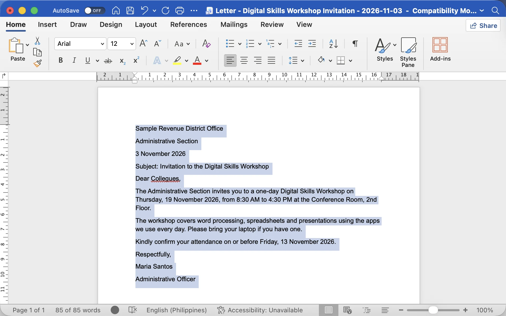
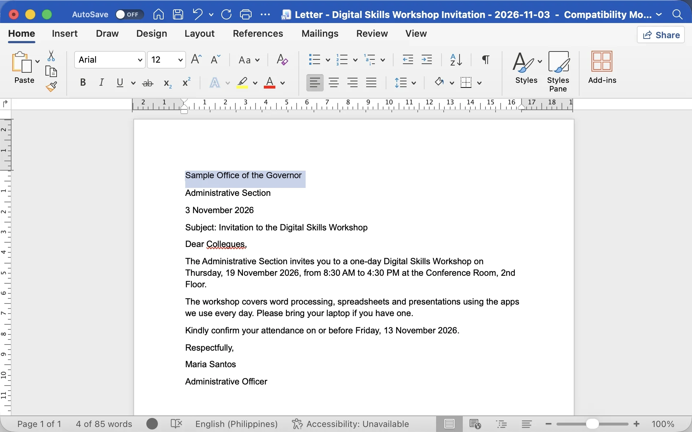
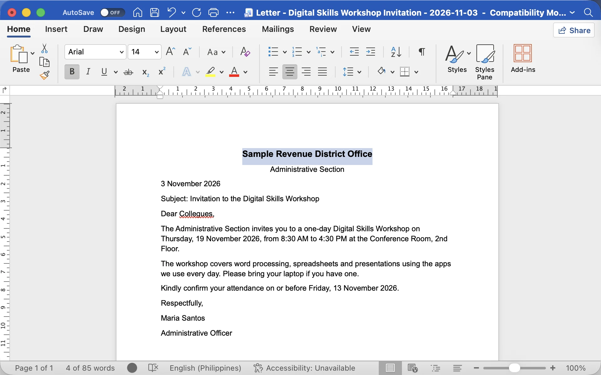
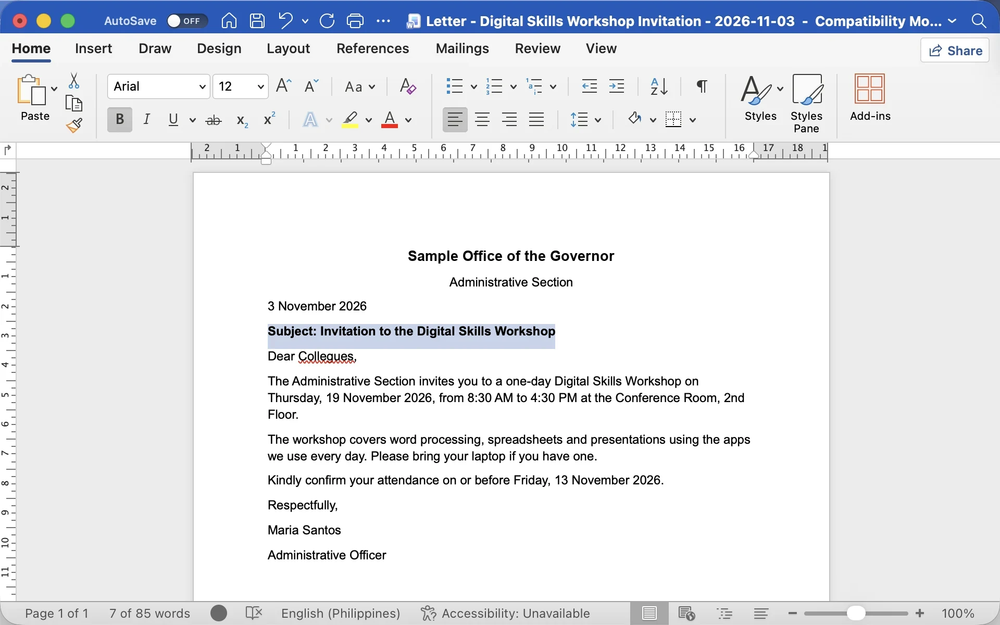
Microsoft Word for Mac, sample letter. Word on Windows has the same Home tab controls.
- Ctrl+A selects the whole letter. Pick one clean font: Arial, Calibri, Aptos or Times New Roman. Body text 11 or 12 pt.
- Select the office name: drag across it, or click at the start and Shift+click at the end.
- Home tab: Bold, 14 pt and Center. Headings 14 to 16 pt.
- Subject line: Ctrl+B. Keep official letters in black or dark blue.
Ctrl+B Bold · Ctrl+I Italic · Ctrl+U Underline, the same in Word, Google Docs and LibreOffice Writer.
Press Next to walk the four real Word screens: select all and set the font, select the office name, then Bold, 14 pt and Center, then the bold subject line. Then do it live on the letter. The screens are Word for Mac; the Home tab on Windows has the same controls (Mac users press Cmd instead of Ctrl).
Explain "standard font sizes" from the lab: 11 or 12 pt for body text. Word's newest default font is Aptos; older versions use Calibri. Google Docs starts with Arial 11.
Warn against the "fiesta" look: five fonts, rainbow colours, everything bold. When everything is bold, nothing stands out.
Paragraph formatting
Four ways to line up a paragraph
Default. Easy to read.
Titles, letterheads, invitations.
Dates, page numbers, amounts.
Straight edges on both sides. Lab 2 body text.
Show each button live. Look at the right edge of each sample: only Justify has straight edges on both sides, like a newspaper column. That's what the lab requires for the letter body.
Word and LibreOffice share the same shortcuts: L, E for cEnter, R and J. Google Docs adds Shift.
Ask: "Who has centered a title by pressing the spacebar many times?" Laugh together, then show the Center button. Spaces shift when you change fonts or print.
Paragraph formatting
Line spacing and space between paragraphs
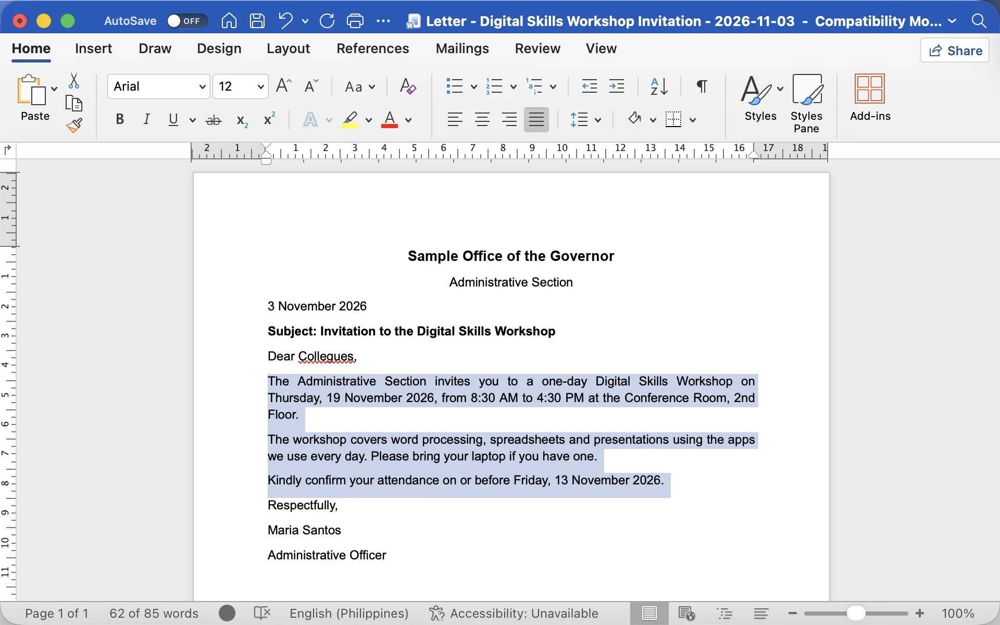
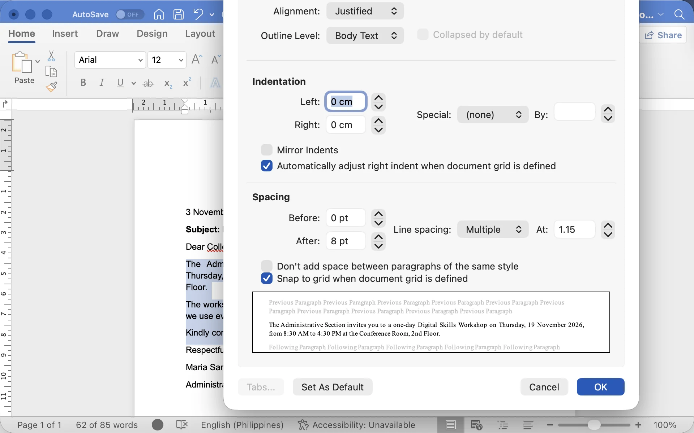
Microsoft Word for Mac: Format › Paragraph. On Windows: Home tab, the small arrow at the corner of the Paragraph group (or Layout › Spacing).
- Select the body paragraphs.
- Open Paragraph. Line spacing Multiple, 1.15 (or 1.0). Spacing After: 8 pt. OK.
- Word quick way: Home › Line and Paragraph Spacing (1.0, 1.15, 1.5, 2.0)
- Docs: Format › Line & paragraph spacing
- Writer: Format › Paragraph › Indents & Spacing
Line spacing is the gap between lines inside a paragraph. Paragraph spacing is the gap before or after a whole paragraph.
Press Next to go from the selected paragraphs to the real Paragraph dialog (Word for Mac; on Windows open it from the small arrow at the corner of the Home › Paragraph group). Contrast the "Enter twice" habit with Space After. The difference shows when the document changes: with Space After, adding a paragraph needs no extra work.
Demo: select all body paragraphs, open Line and Paragraph Spacing, choose 1.15. Then Layout tab, Spacing After 8 pt. Use 2.0 only when someone asks for double spacing.
Lists
Bullets for items, numbers for steps
• Bullets
Order doesn't matter.
- Laptop and charger
- Company ID
- Ballpen and notebook
1. Numbering
Order matters.
- Fill in the form
- Have it signed
- Submit by 13 Nov
Ask: "What's the difference?" Bullets when the order doesn't matter, like a list of things to bring. Numbers when it does, like steps to register.
Demo the auto-list: type an asterisk, a space, some text, Enter. Word, Docs and Writer all turn it into a bullet list. Then show Tab to indent and Enter twice to stop.
This solves warm-up answer A, the bullets that won't behave.
Styles
A style is a saved bundle of formatting.
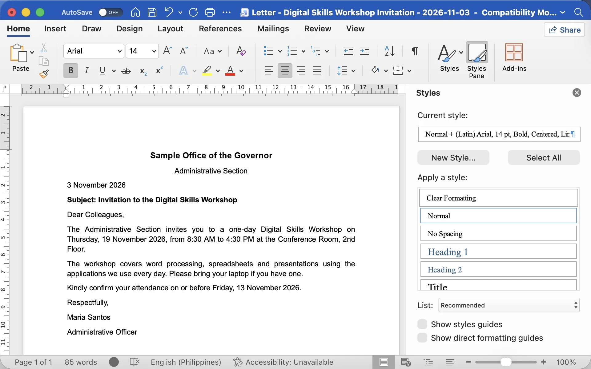
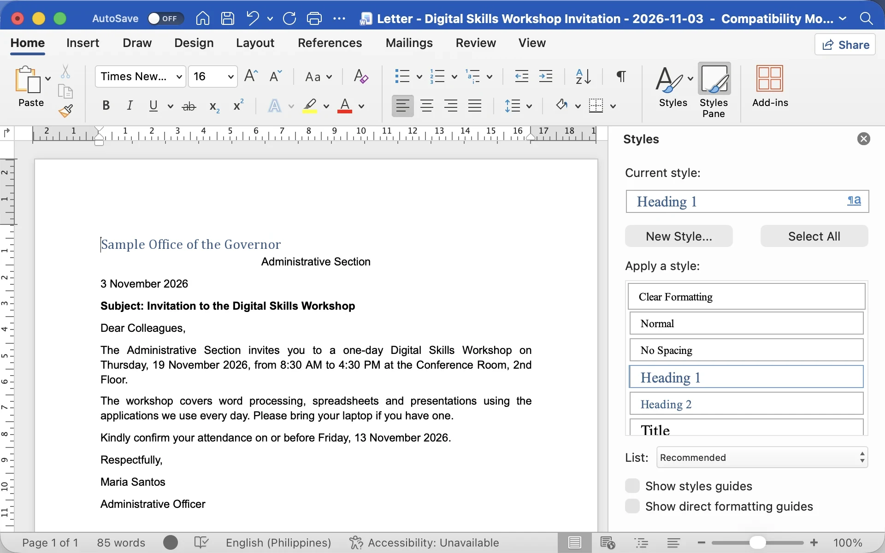
Microsoft Word for Mac, Home › Styles Pane. Windows: Home › Styles, the small arrow at the corner of the group.
- The Styles Pane shows the style under the cursor. Here: Normal plus hand-made formatting.
- One click on Heading 1 applies font, size, colour and spacing together.
- Change the style once and every heading using it updates.
- Headings feed the Navigation Pane and an automatic table of contents.
Styles are like a uniform: everyone in the same role wears the same thing, and if the office changes the uniform, everyone changes at once.
Press Next: the real Styles Pane first shows Normal plus hand-made formatting, then Heading 1 after one click. Demo: put the cursor in a line, click Heading 1. Then right-click Heading 1, Modify, change the colour, and every Heading 1 updates.
For a one-page letter, styles are optional. For reports and manuals, they are essential. The shortcut Ctrl+Alt+1 works in Word and Google Docs; Writer uses Ctrl+1.
Two time-savers
Copy a look, or wipe it clean
Format Painter
Copies the look of some text, not the words.
- Click inside text that looks right
- Click Format Painter (Home › Clipboard)
- Drag over the text to fix
Double-click the brush to paint many places; Esc to stop. Docs: Paint format (roller). Writer: Clone Formatting.
Clear Formatting
Removes the formatting, keeps the words.
| App | Shortcut |
|---|---|
| Word | Clear All Formatting button (A with eraser) |
| Docs | Ctrl+\ |
| Writer | Ctrl+M (Clear Direct Formatting) |
Great for text pasted from emails and websites.
Demo Format Painter: format the "Subject:" line nicely, then paint that look onto another line. The brush cursor shows you're in painting mode.
Tip: a single click paints once; a double-click keeps the brush loaded until you press Esc.
Then Clear Formatting: select a messy paragraph, click the eraser button, and it goes back to plain Normal text. This fixes warm-up answer B. In Word, Ctrl+Space also clears character formatting like bold or font changes.
Editing
Cut, copy, paste, and paste clean
Cut
Move text
Ctrl+X
Copy
Duplicate text
Ctrl+C
Paste
Put it here
Ctrl+V
Paste Options in Word
After pasting, click the small (Ctrl) clipboard tag, or right-click:
- Keep Source Formatting: brings the old look along
- Merge Formatting: matches the text around it
- Keep Text Only: plain words, your formatting. Use this for email, web and AI text.
Paste as plain text elsewhere
- Google Docs: Ctrl+Shift+V
- LibreOffice: Ctrl+Alt+Shift+V
- Any app: paste into Notepad first, then copy again
Everyone knows Ctrl+C and Ctrl+V. The new skill is Keep Text Only.
Demo: copy a paragraph from a web page or email, paste it into the letter. It arrives in a different font and colour. Undo, then right-click and choose Keep Text Only, the clipboard icon with an "A". Now it matches the letter.
This matters even more in Topic 2.6, when we paste text from AI assistants. The Notepad trick is old but works everywhere.
Editing
Undo your mistakes, replace in one go
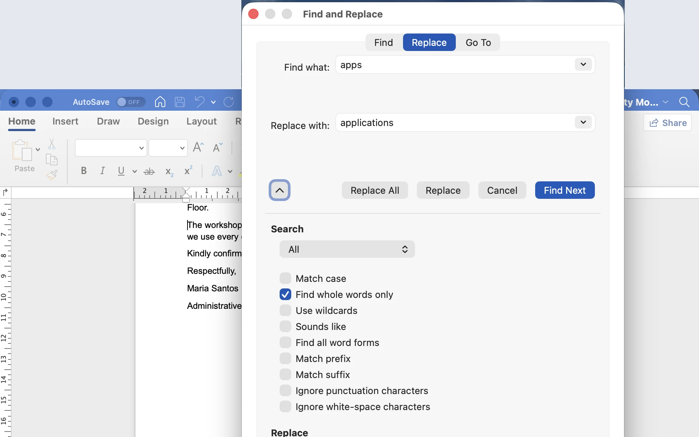
Microsoft Word for Mac: Edit › Find › Advanced Find and Replace, options under the arrow. On Windows: Ctrl+H, then click More.
- Ctrl+H. Find what: apps. Replace with: applications.
- Tick Find whole words only.
- Replace All, or Replace one at a time.
Undo is your safety net: it works many steps back. In Google Docs, Redo can also be Ctrl+Shift+Z.
Press Next to walk the real Find and Replace dialog (Word for Mac, opened from Edit › Find › Advanced Find and Replace; the options sit under the small arrow). Then demo on the letter: replace "apps" with "applications". In Word on Windows, press Ctrl+H, click More to see "Find whole words only".
Office example: the venue changed, so replace every "Conference Room" in a 5-page memo in one go. Home example: your sari-sari price list, change every "₱12" to "₱13" when the supplier raises prices. Warm-up answer D, solved.
Proofreading tools
Let the app spot errors, then you decide
| Tool |  Word Word | Docs | Writer |
|---|---|---|---|
| Spelling & grammar | F7 (Review › Editor) | Ctrl+Alt+X | F7 |
| Word count | Status bar or Ctrl+Shift+G | Ctrl+Shift+C | Status bar |
- A red wavy underline means a possible misspelling. Right-click for suggestions.
- Names like Pabellan or Alubijid get flagged too: choose Ignore or Add to Dictionary.
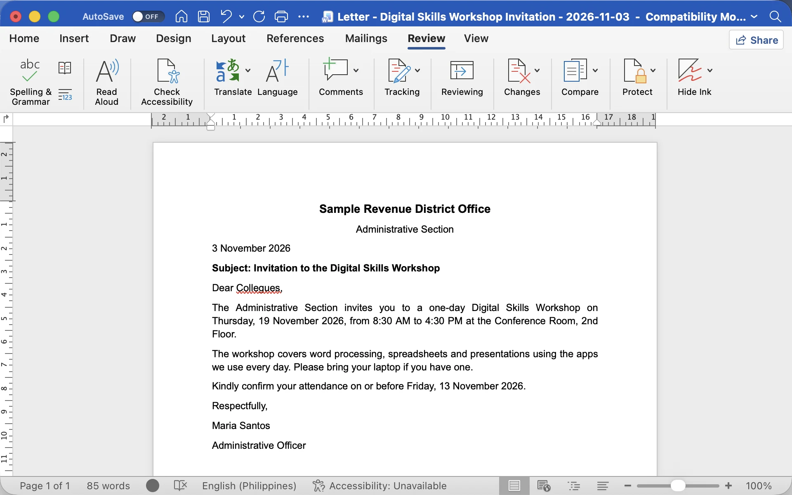
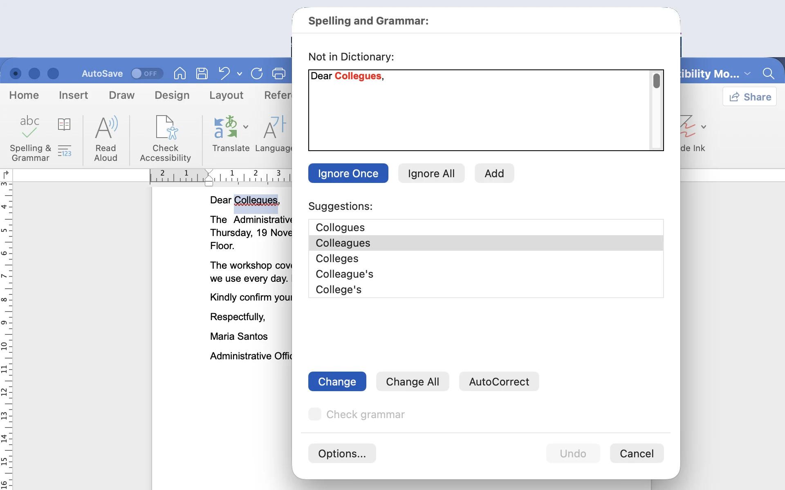
Microsoft Word for Mac: Review › Spelling & Grammar. Windows Word opens the Editor pane (F7) with the same choices.
Click the picture to go from the red wavy line (real Word screen) to the spelling check. Demo: type "Collegues" in the letter and show the red underline, then right-click for "Colleagues". Then press F7 to check the whole document.
Point out that Philippine names and places get flagged. That's fine; ignore them or add them to the dictionary.
Word count matters when a form or a submission has a limit, for example a 150-word justification. The status bar shows it live; select a paragraph to count only that part.
Myth or fact? · click a card to flip
Three things people believe about formatting
"If spell check shows no red lines, the letter is error-free."
Click to flipMyth
"Form" for "from", or "manger" for "manager", are real words, so they pass. Wrong dates and names pass too. Always read it yourself.
Click to flip back"Pressing the spacebar many times is fine for centering a title."
Click to flipMyth
Spaces shift when the font, size or printer changes. Use Center (Ctrl+E), and tabs for columns.
Click to flip back"Formatting is just decoration. Only the words matter."
Click to flipMyth
Formatting guides the reader to the date, the venue and the deadline. A clean letter also looks official and trustworthy.
Click to flip backRead each card out loud and ask the chat to vote: M for myth, F for fact. Then click to flip.
All three are myths. The spell-check one is the most dangerous in an office: a letter with the wrong date or a misspelled name of the addressee passes spell check easily. Spell check is a helper, not a proofreader.
On the third card: scammers copy official formatting precisely because good formatting signals trust.
Running example · before and after
Same words, very different letter
Before: pasted plain text
Sample Revenue District Office
Administrative Section
3 November 2026
Subject: Invitation to the Digital Skills Workshop
Dear Collegues,
The Administrative Section invites you to a one-day Digital Skills Workshop on Thursday, 19 November 2026, from 8:30 AM to 4:30 PM at the Conference Room, 2nd Floor.
The workshop covers word processing, spreadsheets and presentations using the apps we use every day. Please bring your laptop if you have one.
Kindly confirm your attendance on or before Friday, 13 November 2026.
Respectfully,
Maria Santos
Administrative Officer
After: formatted in about 5 minutes
SAMPLE REVENUE DISTRICT OFFICE
Administrative Section
3 November 2026
Subject: Invitation to the Digital Skills Workshop
Dear Colleagues,
The Administrative Section invites you to a one-day Digital Skills Workshop on Thursday, 19 November 2026, from 8:30 AM to 4:30 PM at the Conference Room, 2nd Floor.
The workshop covers word processing, spreadsheets and presentations using the applications we use every day. Please bring your laptop if you have one.
Kindly confirm your attendance on or before Friday, 13 November 2026.
Respectfully,
MARIA SANTOS
Administrative Officer
Let this slide breathe. Ask: "List in the chat every change you can spot between the two." Give them a minute.
Expected answers: font changed; office name centered, bold and bigger; subject in bold; body justified; spacing between paragraphs; key dates bold; "Collegues" fixed by spell check; "apps" replaced with "applications"; signature block with room to sign.
Point out: not one word was retyped. The office name and signature are in capitals with Change Case › UPPERCASE (Shift+F3 cycles the case). That's the power of formatting tools.
Same tools, two worlds
Where you'll use these skills this week
- Formal letter or memo: one font at 12 pt, justified body, bold subject line
- Notice to taxpayers: a clear heading style, numbered steps, deadline in bold
- Report from many contributors: paste with Keep Text Only, then one Format Painter pass
- Venue changed? Find and Replace across the whole document
Dela Cruz Family Reunion 2026
Sunday, 27 December · Lolo's house, Alubijid
Please bring:- One dish per family
- Old family photos
- Games for the kids
Or a sari-sari price list: bold item names, right-aligned prices, Find and Replace when prices go up.
Connect the tools to real tasks. At the office: letters, memos, notices for taxpayers, consolidated reports.
At home: the family reunion announcement uses centered title, bold, a bullet list. Ask: "Who's in charge of the reunion or the Christmas party invitation in your family?" There's always one person, and now they have the skills.
The sari-sari price list is a great Find and Replace exercise: when the supplier raises the price of a product, replace it once instead of hunting line by line.
Watch · 5 minutes
From plain text to a formal letter
Watch our workshop invitation get its font, alignment, spacing and lists, then see mistakes fixed in seconds with Keep Text Only, Find and Replace and spell check.
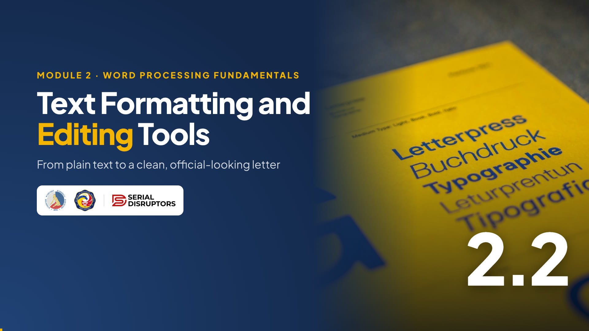
4:58Introduce the video in one or two sentences, then read the While watching task aloud so everyone knows what to look for.
Press → to open the video full screen. In Zoom or Meet, share this tab with computer sound turned on.
Space or K plays and pauses (or click the video). C turns captions on or off; the speed button offers 1.25× and 0.85×. The arrows still move between slides, and the video pauses when you leave this slide.
Length 4:58. Pause anywhere to take a question; captions stay on screen for anyone without sound.
After the video, go back to the While watching task: ask two or three people for their answers.
Try it now · hands-on
Turn your plain text into a formal letter
- Ctrl+A, then set Arial (or Calibri) 12 pt.
- Office name: bold, 14 pt, centered. Section name: centered.
- Make the Subject line bold.
- Select the three body paragraphs and press Ctrl+J (Justify).
- Line spacing 1.15, 8 pt after paragraphs.
- Ctrl+H: replace apps with applications (whole words only).
- Run spell check (F7) and fix Collegues if you see it.
- Save with Ctrl+S.
Start the 10-minute timer. Keep your own screen shared and do the steps at a steady pace.
The raw text from 2.1 has the typo "Collegues" on purpose, so spell check has something to catch. If someone already fixed it, great: they were proofreading.
Walk around virtually: ask two or three people to share their screens at the 7-minute mark. Celebrate good work with reactions. Note: Ctrl+S, not Save As, because we're updating the same file.
Quick check · click an answer
You pasted a paragraph from an email into the letter. It came in a different font, size and colour. The fastest fix?
Chat first, then click to reveal. The answer is B.
Mention the alternatives: in Google Docs use Ctrl+Shift+V; in Writer use Paste Special, Unformatted Text; or select the pasted paragraph and use Clear Formatting.
Ask one participant to demonstrate Keep Text Only on their shared screen. Peer demos stick better than mine.
Recap · Topic 2.2
Select, format, edit, proofread.
Format
One font at 11 to 12 pt, justified body, spacing after, lists and styles instead of manual tricks.
Edit
Keep Text Only for pasted text, Ctrl+Z to undo, Ctrl+H to replace everywhere.
Proofread
Spell check helps, but you are the final proofreader of names, dates and amounts.
Next · 2.3 Working with Tables and Graphical Elements: adding the workshop schedule and a logo to our letter.
Recap in one breath: select first, format with the right tool, edit cleanly, proofread yourself.
Make sure everyone saved the formatted letter. If someone missed a step, they can catch up during the break.
Bridge to 2.3: "Our letter says the workshop runs from 8:30 to 4:30, but what happens in between? Next, we add a schedule table and a logo so it looks like it came from a real office."